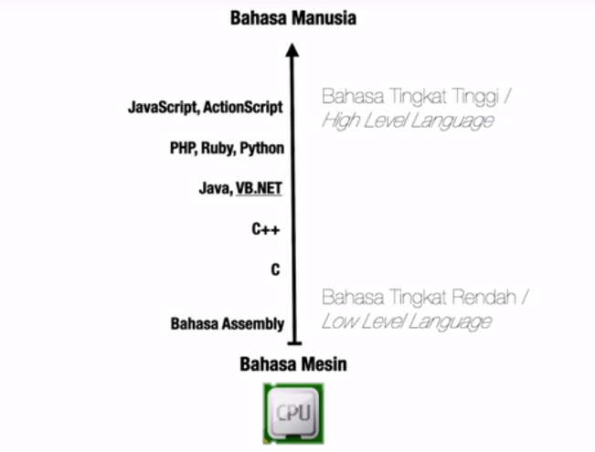
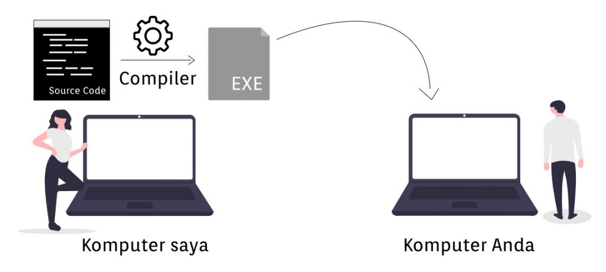

Pengenalan JavaScript
Program
Program adalah kumpulan intruksi yang terstruktur dan dirancang untuk melakukan fungsi spesifik pada komputer, dengan tujuan untuk menyelesaikan sebuah pekerjaan dan mempermudah pekerjaan para pengguna.
Di bawah ini contoh program kompleks yang sering kita temui/sering kita gunakan dalam sehari-hari.

Bahasa Pemograman
Bahasa pemrograman adalah sebuah instruksi standar untuk memerintah komputer agar menjalankan fungsi tertentu. Bahasa pemrograman ini merupakan suatu himpunan dari aturan sintaksis dan semantik yang dipakai untuk mendefinisikan tata olah (program).
Fungsi bahasa pemrograman itu sendiri yaitu memerintah komputer untuk mengolah data sesuai dengan alur berpikir yang programmer inginkan. Keluaran (output) dari bahasa pemrograman tersebut dapat berupa tata olah, konsol atau aplikasi. Contohnya adalah tata olah yang digunakan oleh kasir di mal-mal atau pasar raya, penggunaan lampu lalu lintas di jalan raya, dan lain-lain.
Tingkatan Bahasa Pemograman

Compiler, Interpreter, dan Perbedaannya
Compiler (kompilator) adalah sebuah program komputer yang berguna untuk menerjemahkan program komputer yang ditulis dalam bahasa pemrograman tertentu menjadi program yang ditulis dalam bahasa pemrograman lain.

Penerjemah atau lebih dikenal dengan interpreter merupakan perangkat lunak yang berfungsi melakukan eksekusi sejumlah instruksi yang ditulis dalam suatu bahasa pemrograman tanpa terlebih dahulu menyusunnya menjadi program bahasa mesin.
Interpreter umumnya menggunakan salah satu strategi berikut untuk menjalankan program :
Proses ini sangat berbeda dengan compiler, dimana pada compiler, hasilnya sudah langsung berupa satu kesatuan perintah dalam bentuk bahasa mesin, dimana proses penterjemahan dilaksanakan sebelum program tersebut dieksekusi.
Berikut perbedaan antara compiler dan interpreter
| Kategori | Compiler | Interpreter |
|---|---|---|
| Penggunaan | Source code telah dikonversi menjadi machine code. Sehingga waktu eksekusi program akan lebih singkat. | Lebih mudah digunakan untuk pemula yang baru belajar. |
| Hasil keluaran | Menghasilkan program luaran atau berkas executable. Contohnya seperti .exe yang dapat dijalankan secara independen | Tidak menghasilkan program luaran atau berkas executable. Jika ingin menjalankan program, maka harus melibatkan source code secara langsung selama proses eksekusi. |
| Efektifitas | Hasil kompilasi dari source code akan berjalan lebih cepat. | Berjalan lebih lambat ketika dieksekusi. |
| Platform | Spesifik ke platform tertentu, misal hasil kompilasi berupa berkas.exe tidak dapat dijalankan di Mac. Begitu pula sebaliknya. | Cross platform. Bisa dijalankan di banyak platform asalkan memiliki interpreter yang sesuai. |
| Alur pembacaan | Apabila terdapat kesalahan penulisan kode maka compiler akan menampilkan pesan eror. Selain itu program tidak akan berjalan atau tidak menghasilkan berkas executable apabila kesalahan kodenya belum diperbaiki. Misal ada kode yang salah di baris ke-5 maka harus diperbaiki dulu supaya bisa berjalan. | Membaca satu per satu baris kode yang ada. Jika terdapat kode yang salah maka interpreter akan menampilkan pesan eror dan harus diperbaiki untuk melanjutkan eksekusi baris selanjutnya. Misalnya terdapat eror di baris ke-5, maka masih bisa berjalan karena baris pertama sampai keempat tidak ada eror. |
| Bahasa Pemrograman | C, C++, C#, Swift, Java | JavaScript, Python, PHP, Ruby. |
Pengrtian dan Sejarah JavaScript
JavaScript adalah bahasa pemrograman yang digunakan untuk membuat halaman web yang interaktif. JavaScript merupakan bagian penting dari teknologi web modern, bersama dengan HTML dan CSS.
Javascript adalah bahasa pemrograman tingkat tinggi atau dinamis.
JavaScript populer di internet dan dapat bekerja di sebagian besar penjelajah web populer seperti Google Chrome, Internet Explorer (IE), Mozilla Firefox, Netscape dan Opera.namun dianjurkan untuk menggunakan google chrome karena ada beberapa sintak js yang tidak teringtegrasi dengan browser lainnya. Kode JavaScript dapat disisipkan dalam halaman web menggunakan tag script. JavaScript merupakan salah satu teknologi inti World Wide Web selain HTML dan CSS. JavaScript membantu membuat halaman web interaktif dan merupakan bagian aplikasi web yang esensial.
Awalnya hanya diimplementasi sebagai client-side dalam penjelajah web, kini engine JavaScript disisipkan ke dalam perangkat lunak lain seperti dalam server-side dalam server web dan basis data, dalam program non web seperti perangkat lunak pengolah kata dan pembaca PDF, dan sebagai runtime environment yang memungkinkan penggunaan JavaScript untuk membuat aplikasi desktop maupun mobile.

JavaScript dibuat dan didesain oleh Brandan Eich, seorang karyawan Netscape, pada tahun 1995. Bahasa pemrograman ini mulanya disebut Mocha, kemudian diganti ke Mona, lalu menjadi LiveScript sebelum akhirnya resmi menyandang nama JavaScript. Versi pertama dari bahasa ini hanya terbatas di kalangan Netscape saja. Fungsionalitas yang ditawarkan dari bahasa pemrograman inipun terbatas. Namun, JavaScript terus dikembangkan oleh komunitas developer yang tak pernah lelah mengerjakan bahasa pemrograman ini.
Pada tahun 1996, JavaScript secara resmi disebut sebagai ECMAScript, di mana ECMAScript 2 diluncurkan pada tahun 1998 dan ECMAScript 3 diperkenalkan pada tahun 1999. ECMAScript tersebut dikembangkan hingga akhirnya menjadi JavaScript sebagaimana yang kita kenal saat ini. Tak hanya lintas browser, JavaScript juga bisa digunakan di berbagai perangkat, termasuk perangkat mobile dan desktop komputer.
Hubungan JavaScript dengan HTML dan CSS
Bila diibaratkan pada sebuah robot, hubungan antara JavaScript dengan HTML dan CSS sebagai berikut

Berdasarkan gambaran di atas, kita bisa mengambil kesimpulan yaitu :
Referensi Melatih Skill
Berikut referensi tambahan untuk melatih kemampuan pemograman teman-teman :
| No | Course | Link |
|---|---|---|
| 1 | Dicoding | Dicoding |
| 2 | Hackerrank | Hackerrank |
| 3 | Codewars | Codewars |
| 4 | Leetcode | Leetcode |